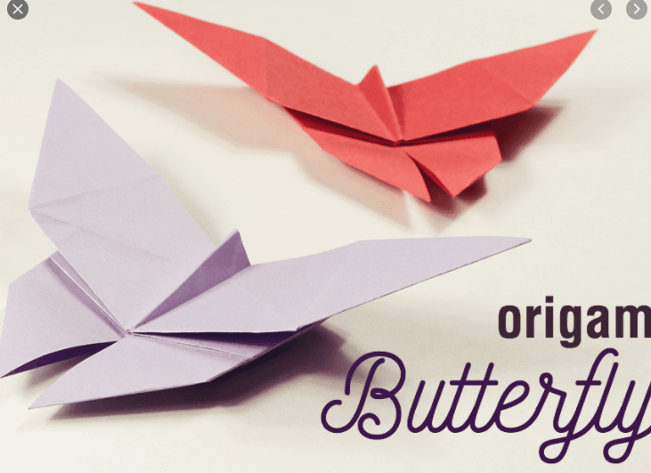
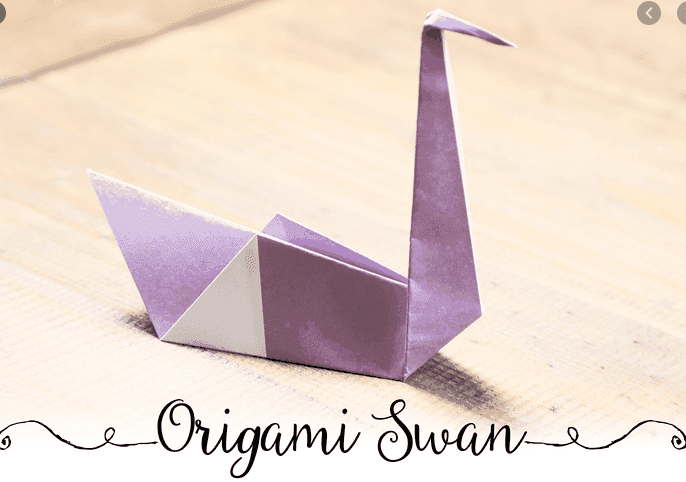

Origami Designs
About Us
Follow Us
1. Camel

Do you know!
- Camel is known as the ship of desert because it is mainly the only mode of transportation there.
- In India Camels are mostly found in deserts of Rajasthan and Gujarat.
- Camel is a herbivorous animal.
2. chameleon

Do you know!
- There are around 160 Chameleon species on this planet.
- According to their deits, Chameleons are omnivorous.
- Chameleons use their tongue to catch their prey, which are mostly insects.
3. Pigeon

Do you know!
- LifeSpan of average pigeon is around 15 years
- Pigeons are very clever and they have unique ability to find their way home.
- Pigeons are herbivorous in nature and their deit includes seeds, fruits and plants.
4. butterfly

Do you Know!
- One of the most inportant winged insect is butterfly.
- They have six legs which are joined, three parts of body and two antenas.
- They suck the juice from the flower.
5. Swan

Do you know!
- Swan is a bird that usually swims on water bodies like ponds, streams, etc.
- A swan looks like a duck as it has a long beak, white feathers and wings.
- In spite of having wings, it cannot fly. However, it can take long jumps.
6. Panda

Do you know!
- Pandas are generally found in thick bamboo forests, high up mountains of central china.
- pandas are BIG eaters-everyday they fill their tummies for up to 12 hours, shifting up to 12 kilometers.
- Sadly, these beautiful bears are endangered, and its estimately only 1,000 remain in the wild.
THANK YOU